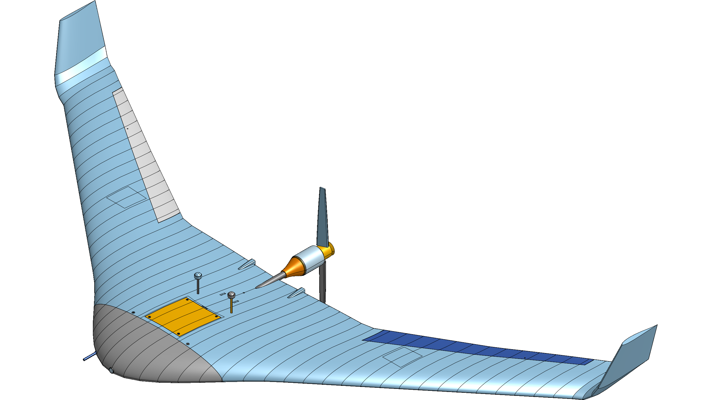

The recent wave of 3D generative AI models focuses almost exclusively on neural radiance fields (NeRFs), 3D Gaussian splatting, or unconstrained triangle surface meshes. While these representations excel at video games, visual effects, and digital rendering, they are functionally unusable in real-world mechanical and aerospace engineering.
A physical CNC mill, lathe, waterjet, or 5-axis machining center does not accept an unstructured polygon mesh. Physical fabrication requires Boundary Representation (B-Rep) solids: exact mathematical NURBS surfaces, analytic cylindrical holes, datum planes, geometric dimensioning and tolerancing (GD&T), and fully editable parametric feature trees.
1. The Fundamental Flaws of Polygon Meshes in Physical Engineering
When a machine shop or aerospace manufacturing team inspects a component, the differences between a faceted mesh and a B-Rep kernel become critical:
- Lack of Analytic Geometry: In a B-Rep model, a bolt hole is an exact analytic cylinder defined by an axis $\mathbf{L} = \mathbf{p}_0 + t \hat{\mathbf{a}}$ and radius $R$. In an STL or OBJ polygon mesh, that same hole is approximated by hundreds of flat triangular facets. A CAM tool cannot extract a drill-tap cycle, reaming diameter, or tolerance callout (such as ISO 2768-m or ASME Y14.5) from faceted triangle normal vectors.
- Volume and Inertia Discrepancies: In a B-Rep solid, volume $V$ and mass properties are evaluated by applying the Gauss divergence theorem over the exact boundary surfaces:
$$V = \frac{1}{3} \iint_{\partial \Omega} (\mathbf{x} \cdot \mathbf{n}) \, dA, \quad \mathbf{r}_{\mathrm{cg}} = \frac{1}{2V} \iint_{\partial \Omega} (\mathbf{x} \cdot \mathbf{n}) \mathbf{x} \, dA$$In a polygon mesh, even minor artifacts (non-manifold edges, self-intersections, inverted facet normals, or micro-gaps) produce undefined or wildly incorrect volume calculations that corrupt flight dynamics and mass balancing.
- Destructive Downstream Edits: If structural FEA or wind tunnel testing reveals high stress concentration at a wing root fillet, a mechanical engineer modifies the fillet radius parameter from $2.0\,\text{mm}$ to $3.5\,\text{mm}$. In a polygon mesh, there is no fillet entity; the engineer must manually sculpt or regenerate the entire triangle cloud.
- Absence of Mating Constraints: Complex assemblies require kinematic mates: concentric alignments, planar coincident mates, and tangent contact definitions. Meshes possess no concept of mated coordinate reference frames.

2. Architecture of onshape-mcp: Model Context Protocol for CAD
To connect large language models with production CAD kernels, we developed onshape-mcp, a Model Context Protocol server that bridges AI agents directly to the Onshape cloud REST API and Parasolid modeling engine.
Instead of prompting an LLM to hallucinate thousands of 3D point coordinates in text, onshape-mcp exposes structured operational primitives backed by schema validation:
// Example 1: MCP Tool Definition for Parametric Loft Construction
{
"tool": "onshape_create_spline_loft",
"arguments": {
"documentId": "dc3730aa5bcfd1048e6085c2",
"workspaceId": "cdfb7831adeacf36982cc056",
"elementId": "c59f1c24624648d9ff93075c",
"featureName": "MainWingLoft",
"stationProfiles": [
{
"stationName": "RootSection",
"plane": "Right",
"chord_mm": 620.0,
"twist_deg": 0.0,
"airfoil": "Reflex_Centerbody_v4"
},
{
"stationName": "BlendSection",
"offset_y_mm": 240.0,
"chord_mm": 410.0,
"twist_deg": -1.2,
"airfoil": "Transition_Mod_12"
},
{
"stationName": "TipSection",
"offset_y_mm": 775.0,
"chord_mm": 135.0,
"twist_deg": -3.8,
"airfoil": "Tip_Reflex_v2"
}
],
"boundaryConditions": {
"startCondition": "MATCH_TANGENT",
"endCondition": "CLAMP_NORMAL"
}
}
}
The MCP server translates this high-level call into validated FeatureScript payloads and dispatches them to Onshape's /api/v6/partstudios/d/{did}/w/{wid}/e/{eid}/features endpoint. The Parasolid kernel evaluates the spline lofts, computes intersection curves, and returns the resulting topology or exact error diagnostics.
3. Enforcing Invariants in Cloud FeatureScript
A major benefit of programmatic CAD is writing custom FeatureScript functions that run natively inside Onshape's kernel. Rather than relying on the LLM to remember mechanical design rules, the FeatureScript itself acts as a deterministic guardrail:
FeatureScript 2447;
import(path : "onshape/std/geometry.fs", version : "2447.0");
annotation { "Feature Type Name" : "AeroLoftGuard" }
export const aeroLoftGuard = defineFeature(function(context is Context, id is Id, definition is map)
precondition
{
annotation { "Name" : "Profile Sketches", "Filter" : EntityType.FACE }
definition.profiles is Query;
annotation { "Name" : "Minimum Shell Wall Thickness" }
isLength(definition.minWallThickness, LENGTH_BOUNDS);
}
{
// 1. Enforce monotonic spanwise chord reduction
var sketches = evaluateQuery(context, definition.profiles);
for (var i = 1; i < size(sketches); i += 1)
{
var prevBox = evBox3d(context, { "topology" : sketches[i - 1] });
var currBox = evBox3d(context, { "topology" : sketches[i] });
var prevChord = prevBox.maxCorner[0] - prevBox.minCorner[0];
var currChord = currBox.maxCorner[0] - currBox.minCorner[0];
if (currChord > prevChord)
{
throw regenError("Geometry Error: Outboard chord exceeds inboard chord. Monotonicity violated.");
}
}
// 2. Execute B-Rep loft with G1 curvature matching at symmetry plane
opLoft(context, id + "loft", {
"profileSubfeatures" : sketches,
"derivativeInfo" : [{ "profileIndex" : 0, "matchCurvature" : true }]
});
});
If the LLM generates a design with inverted chords or discontinuous transitions, the Onshape compiler immediately throws a regenError, preventing corrupted geometry from entering the CAD tree.
4. Closed-Loop Mass Properties & Aerodynamic Sizing
In autonomous flight vehicle design, aerodynamic lofting and internal structural packaging are deeply coupled. An aerodynamically optimal loft is useless if the internal cavities cannot accommodate the required battery cells or payload volume.
Through onshape-mcp, the optimization engine queries the exact mass and inertia tensor via /api/v6/partstudios/.../massproperties after every geometry mutation:
// Example 2: Structured Mass Properties Output from Onshape Kernel
{
"status": "SUCCESS",
"hasSingleSolid": true,
"volume_m3": 0.00784219,
"surfaceArea_m2": 0.841203,
"mass_kg": 1.4328,
"centroid_m": {
"x": 0.34215,
"y": 0.00000,
"z": 0.01842
},
"inertiaTensor_kg_m2": [
[0.089201, 0.000000, -0.001240],
[0.000000, 0.142055, 0.000000],
[-0.001240, 0.000000, 0.218540]
],
"watertightSolid": true
}This exact feedback allows the optimizer to balance the physical center of gravity directly against the aerodynamic neutral point ($x_{\mathrm{np}}$), guaranteeing longitudinal stability ($SM = 18.5\%$) before committing to tooling.
5. Error Handling and Kernel Rollback Strategies
When an AI agent modifies CAD trees, geometric operations inevitably encounter edge cases. The MCP server handles these through structured feedback loops:
- Fillet Radius Overflow: When the agent requests a blend radius larger than the adjacent edge curvature, the kernel fails with
FILLET_RADIUS_EXCEEDS_BOUNDS. The agent inspects the adjacent edge lengths and scales the radius down to $80\%$ of maximum allowable length. - Self-Intersecting Loft Guides: When aggressive twist angles cause guide curves to intersect mid-loft, the agent queries the failure diagnostics and applies automatic C1 tangency clamping.
- Feature Rollback: If a downstream boolean cut fails, the agent issues a rollback command to the preceding valid feature ID, preventing tree corruption.
6. Conclusion
The future of AI in mechanical and aerospace engineering will not be built on text-to-mesh generators. Engineering requires deterministic, inspectable, and manufacturing-ready geometry. By interfacing language models with cloud B-Rep kernels through structured protocols like MCP, software agents can construct real mechanical mechanisms that transition directly from computation to CNC fabrication.